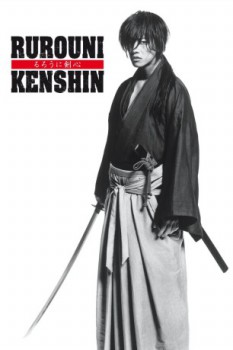

Rurouni Kenshin Part I: Origins (2012)


The Journey Begins.

IMDb Rating:


7.4/10 (690 votes)
Also known as:るろうに剣心 (original title)
Country:Japan, 2h 14min
Genres:Adventure, Action, Fantasy, War, History